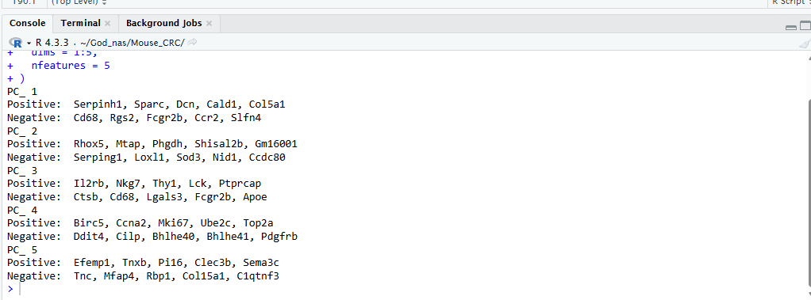
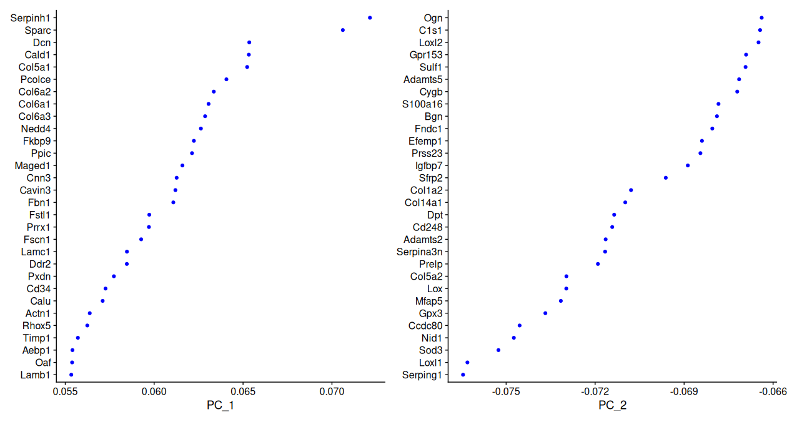
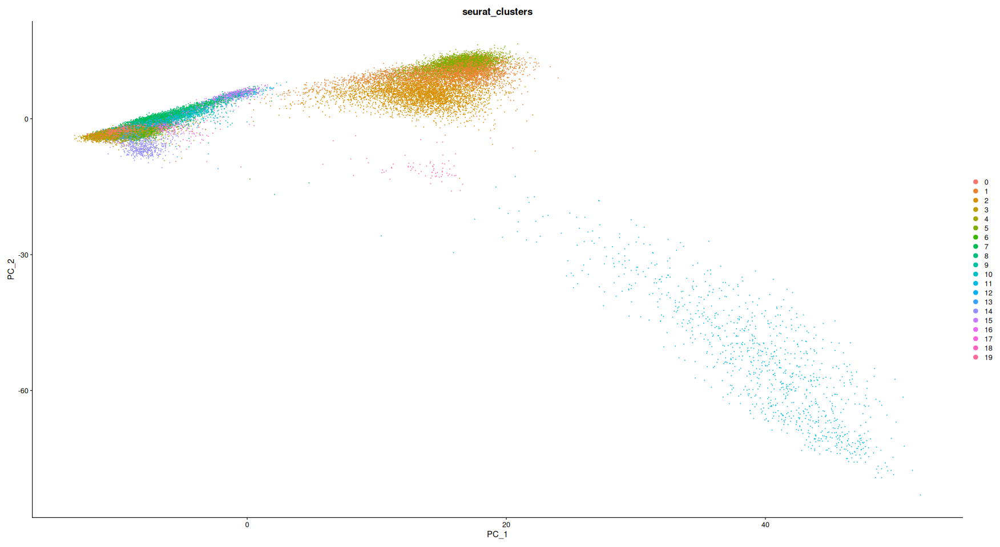
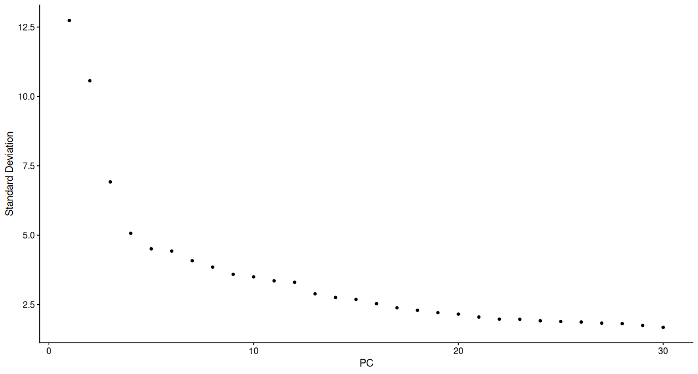

PCA를 이용해 고차원 유전자 발현 정보를 요약하고, 적절한 PC 수와 clustering resolution을 결정하여 다음 단계의 cell type annotation에 사용할 세포 집단을 구성합니다.
| 항목 | 의미 | 이번 데이터 |
|---|---|---|
| PCA | 수천 개 유전자의 변이를 소수의 축으로 요약합니다. | integrated assay에서 30개 PC 계산 |
| dims | neighbor graph와 clustering에 사용할 PC 범위입니다. | Elbow plot을 참고하여 PC 1~20 사용 |
| resolution | cluster를 어느 정도로 세분화할지 조절합니다. | 우선 resolution 0.5에서 20개 cluster 사용 |
Step 4에서 불러온 integrated_obj에는 PCA, UMAP 및 resolution 0.5의
clustering 결과가 이미 저장되어 있습니다.
library(Seurat)
library(ggplot2)
library(patchwork)
integrated_obj
Assays(integrated_obj)
Reductions(integrated_obj)
DefaultAssay(integrated_obj) <- "integrated"
# 저장된 PCA 확인
integrated_obj[["pca"]]
PCA loading은 각 PC를 구성하는 데 크게 기여한 유전자를 보여줍니다. Positive와 negative 방향의 유전자는 해당 PC에서 서로 반대되는 발현 특성을 나타냅니다.
print(
integrated_obj[["pca"]],
dims = 1:5,
nfeatures = 5
)

PC 1~5의 positive 및 negative loading 상위 유전자 출력 결과
Il2rb, Nkg7 등 면역세포 관련 유전자가 확인됩니다.Birc5, Ccna2, Mki67, Top2a 등 증식 관련 유전자가 포함됩니다.VizDimLoadings(
integrated_obj,
dims = 1:2,
reduction = "pca"
)

PC1과 PC2의 주요 positive 및 negative loading gene
그래프에서 0으로부터 멀리 떨어진 유전자일수록 해당 PC 방향을 구성하는 데 더 크게 기여합니다. loading의 부호 자체가 유전자의 증가·감소 또는 좋은·나쁜 효과를 의미하는 것은 아닙니다.
DimPlot(
integrated_obj,
reduction = "pca",
group.by = "seurat_clusters"
)

PC1과 PC2 공간에서 확인한 20개 Seurat cluster의 분포
PCA plot은 첫 두 PC에서 세포 집단이 어떻게 분리되는지 보여줍니다. 일부 cluster가 겹쳐 보이더라도 clustering은 PC1과 PC2만이 아니라 선택한 PC 1~20의 다차원 공간에서 수행되므로, 이 그림만으로 cluster 품질을 판단하지 않습니다.
Elbow plot은 PC가 추가될수록 설명하는 변이가 얼마나 감소하는지를 보여줍니다. 기울기가 급격히 낮아진 뒤 완만해지는 지점을 dims 선택의 참고점으로 사용합니다.
ElbowPlot(
integrated_obj,
ndims = 30
)

PC 1~30의 standard deviation을 나타낸 Elbow plot
이 데이터는 초반 PC에서 standard deviation이 빠르게 감소하고, 이후 완만한 감소가 이어집니다. 하나의 뚜렷한 elbow만 존재하지는 않으므로 주요 신호를 충분히 포함하면서 지나치게 많은 후반 PC를 넣지 않는 절충값으로 PC 1~20을 사용했습니다.
# neighbor graph 생성
integrated_obj <- FindNeighbors(
integrated_obj,
dims = 1:20
)
# resolution 0.5 clustering
integrated_obj <- FindClusters(
integrated_obj,
resolution = 0.5,
random.seed = 1234
)
Resolution은 데이터마다 자동으로 정해지는 하나의 정답값이 아닙니다. 연구자가 어떤 수준의 cell population을 구분하려는지에 따라 선택합니다.
| 목적 | Resolution 방향 | 확인할 내용 |
|---|---|---|
| 주요 cell class 구분 | 상대적으로 낮게 | Epithelial, immune, stromal, endothelial 등 큰 세포 계통을 우선 구분합니다. |
| 세부 cell type 구분 | 중간 수준 | T cell, B cell, myeloid, fibroblast subtype 등 해석 가능한 세부 집단을 확인합니다. |
| 세포 상태 또는 rare subtype 탐색 | 상대적으로 높게 | Activation, cycling, inflammatory state 등을 세분화하되 과도한 분할을 주의합니다. |
최종 integrated_obj를 덮어쓰지 않도록 별도의
resolution_test_obj에서 여러 값을 비교합니다.
# 원본 integrated_obj는 유지
resolution_test_obj <- FindClusters(
integrated_obj,
resolution = c(0.2, 0.5, 0.8, 1.0),
random.seed = 1234
)
# 생성된 resolution metadata 확인
resolution_columns <- grep(
"_res\\.",
colnames(resolution_test_obj@meta.data),
value = TRUE
)
resolution_columns
# resolution별 cluster 수 확인
resolution_cluster_count <- sapply(
resolution_columns,
function(column_name) {
length(
unique(
resolution_test_obj@meta.data[[column_name]]
)
)
}
)
resolution_cluster_count
# resolution별 UMAP 비교
resolution_plots <- lapply(
resolution_columns,
function(column_name) {
DimPlot(
resolution_test_obj,
reduction = "umap",
group.by = column_name,
label = TRUE,
repel = TRUE
) +
NoLegend() +
ggtitle(column_name)
}
)
wrap_plots(
resolution_plots,
ncol = 2
)
PCA와 clustering은 integrated assay를 이용하지만, marker gene의 실제 발현 확인과 DEG 분석은 원래 발현값이 보존된 RNA assay에서 수행합니다.
# resolution 비교용 임시 객체 정리
rm(resolution_test_obj)
gc()
# 저장된 resolution 0.5 cluster를 identity로 지정
Idents(integrated_obj) <- "seurat_clusters"
# marker 분석을 위해 RNA assay로 전환
DefaultAssay(integrated_obj) <- "RNA"
# Seurat v5 RNA layer 결합
integrated_obj <- JoinLayers(
integrated_obj,
assay = "RNA"
)
levels(integrated_obj)
DefaultAssay(integrated_obj)
Layers(integrated_obj[["RNA"]])
integrated assay는 cluster 구조와 batch-corrected 공간을 만드는 데 사용합니다.
Cell type marker를 찾을 때는 RNA assay를 사용해야 합니다.